Länge: 2,85m
Wurfgewicht: 10–30g
Einsatz: Spinnfischen
Notizen: Teleskopenrute, Spitze abgebrochen
Länge: 2,85m
Wurfgewicht: 10–30g
Einsatz: Spinnfischen
Notizen: Teleskopenrute, Spitze abgebrochen
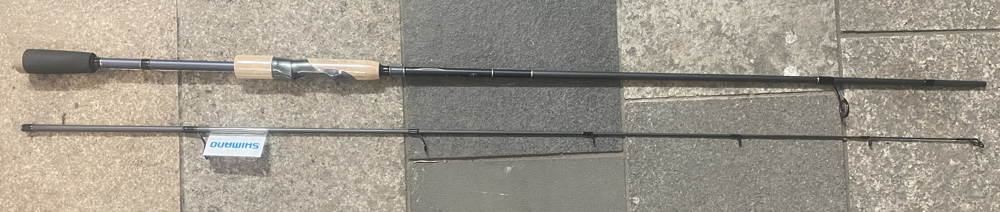
Länge: 2,13m
Wurfgewicht: 7–21g
Einsatz: Spinnfischen
Notizen: Neu
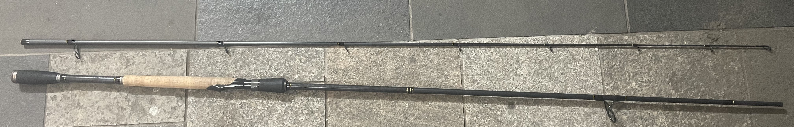
Länge: 2,70m
Wurfgewicht: 20–60g
Einsatz: Spinnfischen
Notizen: Gebraucht, noch nicht gekauft
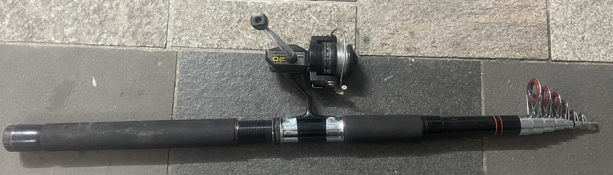
Länge: 4,00m
Wurfgewicht: 10–30g
Einsatz: Spinnfischen
Notizen:
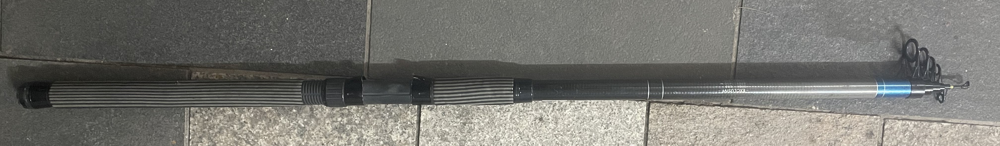
Länge: 4,20m
Wurfgewicht: 10–30g?
Einsatz: Spinnfischen
Notizen: Wurfgewicht nicht klar
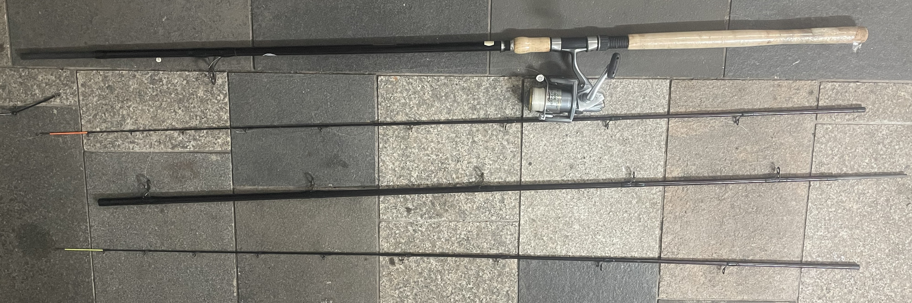
Länge: 4,20m
Wurfgewicht: max. 180g
Einsatz: Grundangeln
Notizen: Verlängerungs aufsatz, 2 verschiedene Spitzen
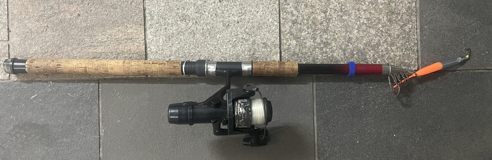
Länge: 3,00m
Wurfgewicht: 30–60g
Einsatz: Spinnfischen
Notizen:
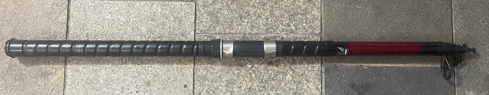
Länge: 4,50m
Wurfgewicht: 40–80g
Einsatz: Grundangeln
Notizen:
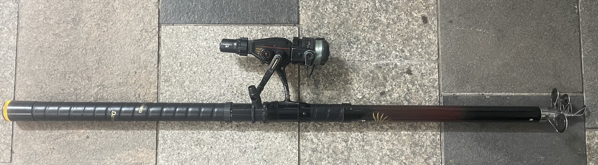
Länge: 4,20m
Wurfgewicht: 30–70g
Einsatz: Grundangeln
Notizen:
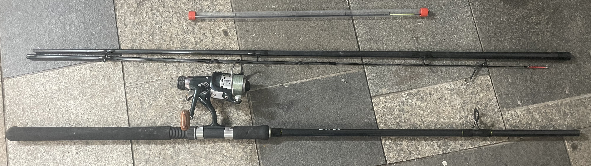
Länge: 3,30m?
Wurfgewicht: max. 90g
Einsatz: Grundangeln
Notizen: Länge nicht sicher, 2 verschiedene Spitzen, aktuelle Spitze abgebrochen
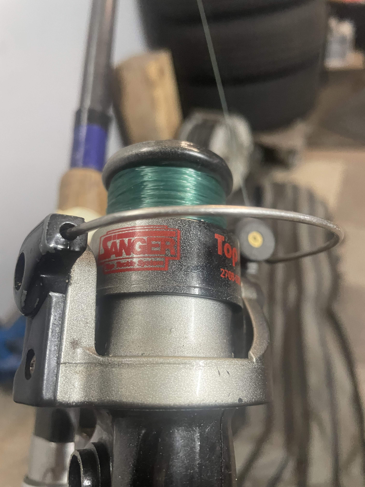
Typ: Stationärrolle
Größe: 2708?
Montiert an: Spinnrute MAGNA 30X (10–30g)
Schnur: Monofil 0,10mm? (ca. 5kg?)
Einsatz: Spinnfischen auf Barsch & Forelle
Übersetzung: Mittel (Allround)?
Notizen: Keine angaben zu Größe, Schnur und übersetzung. Kurbel nicht vorhanden, da wo anderd benötigt
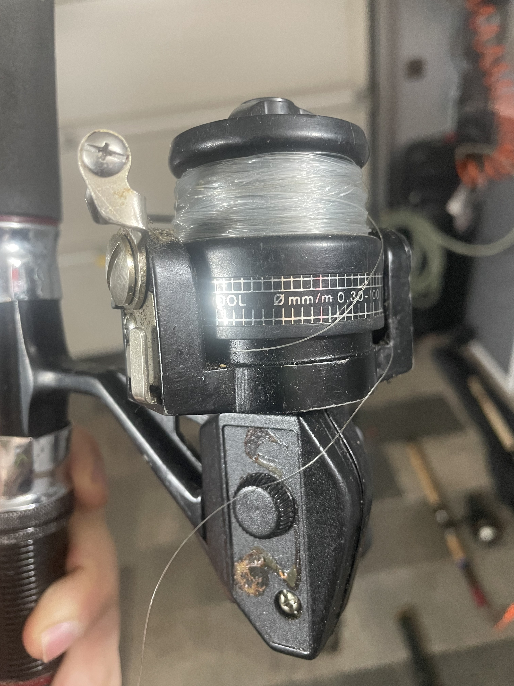
Typ: Stationärrolle
Größe: ?
Montiert an: Telerute Shakespeare Omni (10–30g)
Schnur: Monofil 0,30mm? (ca. 5kg?)
Einsatz: Spinnfischen auf Barsch & Forelle
Übersetzung: Mittel (Allround)?
Notizen: Keine angaben zu Größe, Schnur und übersetzung
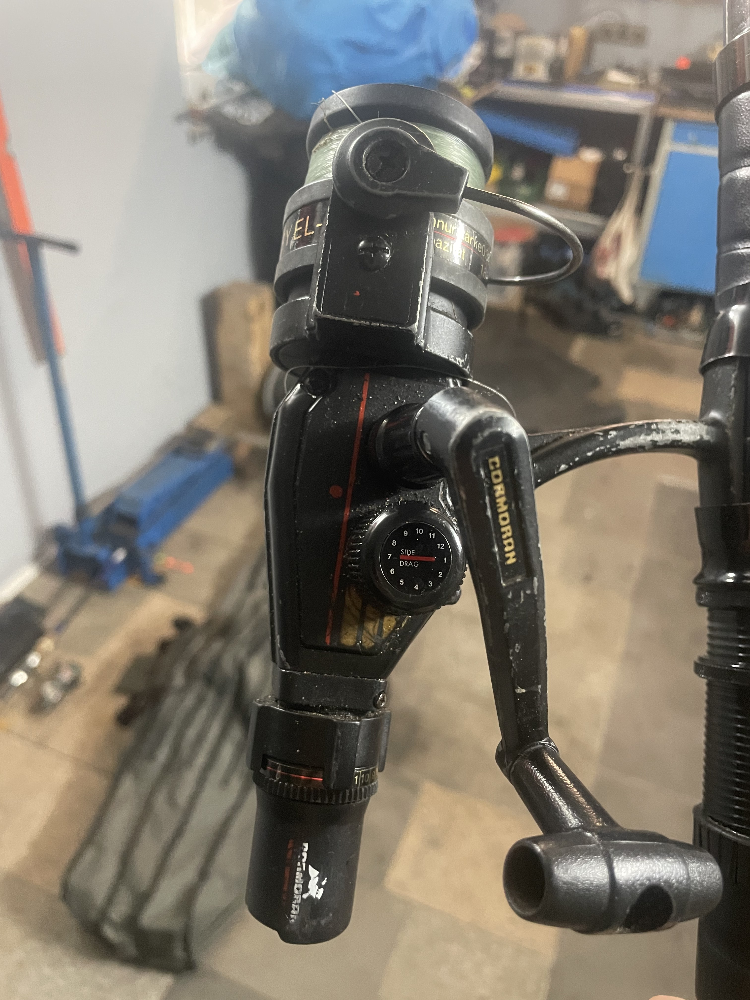
Typ: Stationärrolle
Größe: ?
Montiert an: Telerute Ecostar 70 (30-70g)
Schnur: Monofil 0,10mm? (ca. 3kg?)
Einsatz: Grundfischen
Übersetzung: 4.8:1
Notizen: Keine angaben zu Größe und Schnur. Verschiedene einstellmöglichkeiten
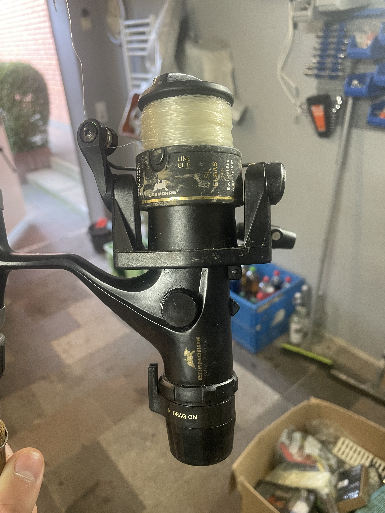
Typ: Stationärrolle
Größe: ?
Montiert an: Telerute YAD Las Vegas (30-60g)
Schnur: Monofil 0,10mm? (ca. 3kg?)
Einsatz: Spinnfischen auf Barsch & Forelle
Übersetzung: 4.8:1
Notizen: Keine angaben zu Größe und Schnur. Elektrischer Bissanzeiger
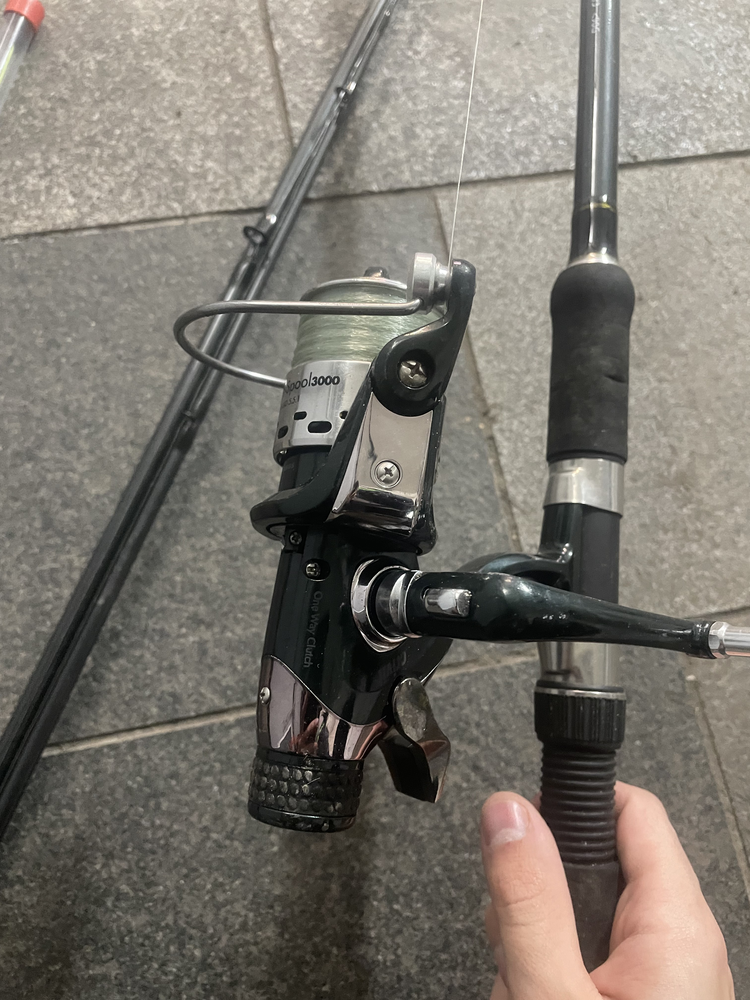
Typ: Stationärrolle
Größe: 3000
Montiert an: Steckrute Camaro Feeder 330 (max. 90g)
Schnur: Monofil 0,30mm? (ca. 5kg?)
Einsatz: Grundfischen
Übersetzung: ?
Notizen: Keine angaben zum Namen, Schnur und Übersetzung
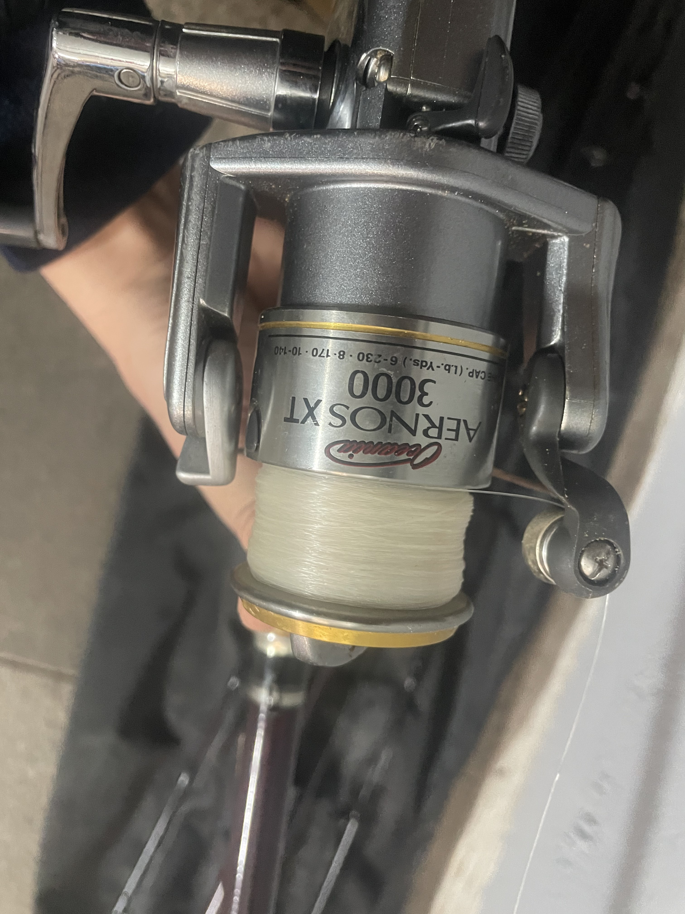
Typ: Stationärrolle
Größe: 3000
Montiert an: Steckrute Zebco Trophy Feeder (max. 180g)
Schnur: Monofil 0,30mm? (ca. 5kg?)
Einsatz: Grundfischen
Übersetzung: ?
Notizen: Keine angaben zu Schnur und Übersetzung
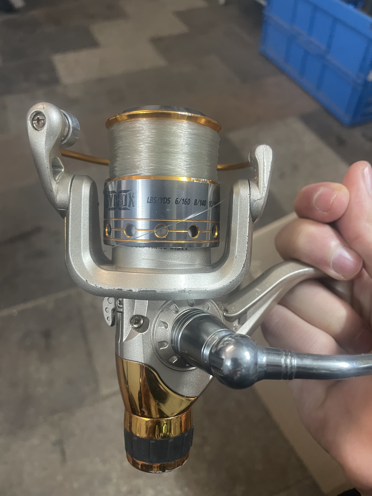
Typ: Stationärrolle
Größe: 2000
Montiert an: Keine
Schnur: Monofil 0,30mm? (ca. 5kg?)
Einsatz: Grundfischen?
Übersetzung: ?
Notizen: Keine angaben zu Schnur und Übersetzung
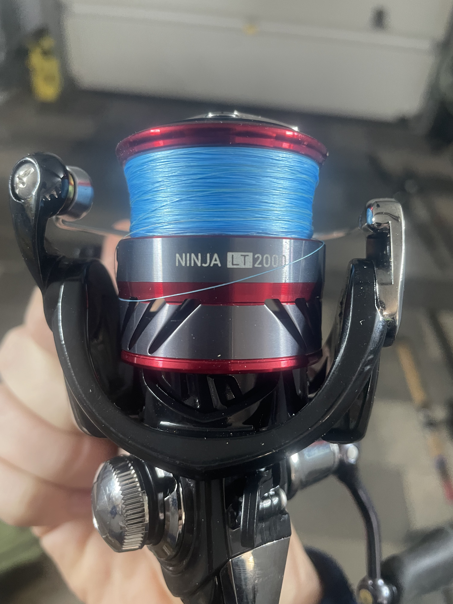
Typ: Stationärrolle
Größe: 2000
Montiert an: Steckrute Fox Rage (30-60g)
Schnur: Geflochten 8x 0,06mm (ca. 5kg)
Einsatz: Spinnfischen auf Barsch & Forelle
Übersetzung: 5,2:1
Notizen: